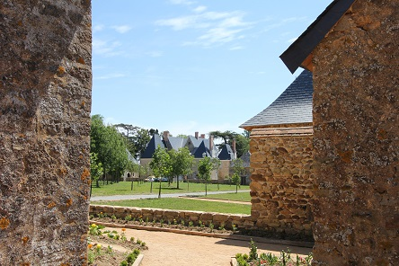

7 raisons pour venir à Martigné
- 1 événement unique ou un séminaire : une soirée, une journée, un week-end, un week-end prolongé ou une réunion
- 330 m², pour la Grande Ecurie (salle de réception chauffée, cuisine et sanitaires), avec ses murs en appareillage de pierres et sa charpente totalement apparente (charpente estampillée avec la date de 1644).
- 300 personnes assises.
- 450 personnes en situation cocktail à l’intérieur.
- 56 lits répartis dans 14 chambres avec salles d’eau et sanitaires, et 3 chambrées.
- 52 hectares, bois, herbages, potager, verger, le Logis de Martigné et le Château de Martigné, entièrement restaurés en 2015.
- 4 saisons car le Logis est chauffé.
Martigné
« Il est des maisons qui se fondent si bien dans les paysages qu’elles semblent en faire partie depuis toujours (…) Inscrit dans ce cadre paisible apparaît le château, dont le plan semble si complexe de prime abord.
Deux bâtiments parallèles dressent leurs hauts pignons : le premier, construit au XVème siècle, fut doublé d’un second un siècle plus tard. Les traces de leur ancienneté se montrent ici et là, archères et meurtrières, pierres vétustes ou rampants taillés. Les chaînes d’angle en roussard tranchent de leur teinte sombre sur l’enduit clair des murs. Ces corps de logis jumeaux furent par la suite, au gré des besoins, et pour répondre à la symétrie, encadrés de pavillons carrés à chaque extrémité. La façade sur le parc fut reprise au XVIIème siècle, percée de fenêtres et couronnée de lucarnes à frontons. L’entrée par la cour donne sur un vestibule où des peintures de lambris en trompe-l’oeil, datant du XVIIème siècle, ont été récemment mises au jour. »
AUVRAY (Didier), BETIN (Alain), Châteaux et manoirs de la Sarthe, Editions Cénomane, Le Mans, 1988.